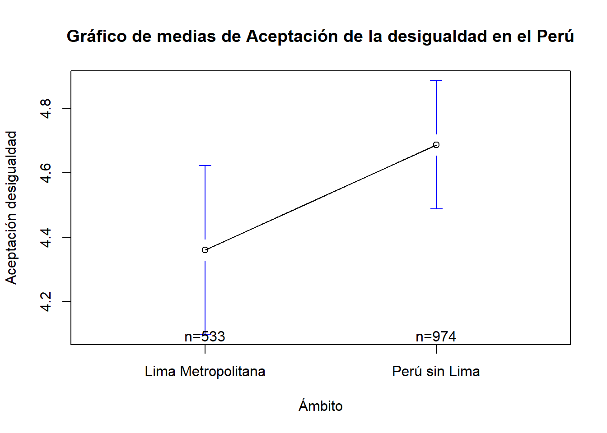
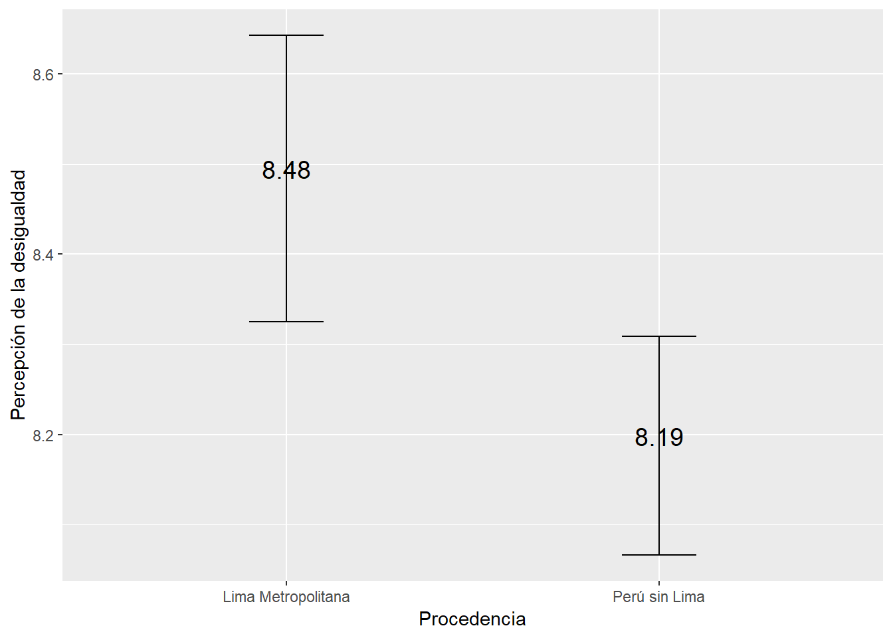

Sesión 5 Estadística Inferencial II
5.1 Recordemos
Abramos los paquetes que vamos a necesitar:
library(pacman)
p_load(haven, tidyverse, lsr, kableExtra)
# Esto equivale a:
# library(haven)
# library(tidyverse)
# library(lsr)
# library(kableExtra)
# Es útil cuando necesitamos abrir un gran número de librerías!Continuemos con el ejercicio que vimos en la última clase utilizando la ENADES.
enades<-read_spss("data/ENADES_2022.sav") # Con esta función abrimos archivos de SPSS
# Si quiere abrirlo desde GitHub entonces corre la siguiente línea:
# enades<-read_spss("https://github.com/ChristianChiroqueR/banco_de_datos/raw/main/ENADES_2022.sav")Elijamos la variable P17:
- En una escala del 1 al 10, en la que 1 es “Totalmente inaceptable” y 10 es “Totalmente aceptable”. ¿Hasta qué punto es aceptable la desigualdad en el Perú? Dígame un número de 1 a 10, recuerde que 1 es “Totalmente inaceptable” y 10 es “Totalmente aceptable (RESPUESTA ESPONTÁNEA)
enades$p17<-as.numeric(enades$p17) #Lo convertimos a numérica
summary(enades$p17) # Calculamos estadísticos de resumen de forma rápida.## Min. 1st Qu. Median Mean 3rd Qu. Max. NA's
## 1.000 1.000 5.000 4.571 7.000 10.000 235.1.1 Pasos previos
- Cuál es la variable?
Nivel de aceptación de la desigualdad en el Perú.
- Qué deseamos saber?
Con nuestra muestra deseamos conocer el parámetro poblacional, es decir, la media de aceptación de la desigualdad en la población.
5.1.2 Estimación puntual
El estimador puntual es una estadística descriptiva que se utiliza para estimar el valor desconocido de un parámetro poblacional a partir de una muestra. El estimador puntual proporciona una única estimación del valor del parámetro y se calcula a partir de los datos de la muestra.
En este caso, la mejor estimación de la media población es simplemente la media muestral.
mean(enades$p17, na.rm=TRUE) #Calculamos la media, obviando valores perdidos. ## [1] 4.5713345.1.3 Estimación por intervalo
Ahora, una vez identificado el estimador puntual, podemos cambiar nuestra estimación, ahora utilizando intervalos.
La clase pasada lo hicimos con la fórmula, paso por paso. Ahora, utilizaremos una función:
#library(lsr) #Recuerda que esta función está en el paquete lsr
ciMean(enades$p17, na.rm = T) # Calculamos el intervalo de confianza de p17, obviando valores perdidos. ## 2.5% 97.5%
## [1,] 4.413023 4.7296455.1.4 Estimación por intervalo entre grupos: Comparación
Ahora bien, en la mayoría de casos lo que deseamos es comparar grupos poblacionales. Por ejemplo:
Quién gana en promedio más dinero, los hombres o las mujeres?
Quién apoya más, en promedio, a la democracia, los de la zona A o la zona B?
Entre otros.
Lo primero que necesitamos para comparar es justamente un grupo de comparación. Ya hablando en programación del R, necesitamos un factor.
Recuerda que el factor era una variable que visualmente son números, pero teóricamente sabemos que cada número es un nivel.
Utilizaremos la variable zona3, la cual separa a los encuestados según su procedencia en: Lima Metropolitana y Perú sin Lima.
Veamos:
enades$zona3<-factor(enades$zona3, # Nombre de la variable a convertir
levels=1:2, # Definimos los niveles (esta variable sólo tenía 2 niveles)
labels=c("Lima Metropolitana", "Perú sin Lima")) #Colocamos sus etiquetas
#Con este comando hemos sobreescrito la variable zona3. Ahora lo que inicialmente era una variable numérica, ahora es un factor. Corroboremos:
str(enades$zona3) #Solicitamos la estructura de la variable zona3## Factor w/ 2 levels "Lima Metropolitana",..: 1 1 2 2 2 2 2 2 2 2 ...Solicitemos el intervalo de confianza de la variable p17 para cada grupo identificado:
p17_segun_zona<-enades %>%
group_by(zona3) %>% #Agrupamos por zona
summarise(mean = mean(p17, na.rm = TRUE), #Utilizamos summarise y pedimos la media,
ci_lower = ciMean(p17, na.rm = T)[1], # También el PRIMER ELEMENTO de la función ciMean
ci_upper = ciMean(p17, na.rm = T)[2]) #Y el SEGUNDO ELEMENTO de la función ciMeanp17_segun_zona## # A tibble: 2 × 4
## zona3 mean ci_lower ci_upper
## <fct> <dbl> <dbl> <dbl>
## 1 Lima Metropolitana 4.36 4.10 4.62
## 2 Perú sin Lima 4.69 4.49 4.89Según el cálculo, para Lima Metropolitana la media poblacional se encuentra entre 4.09 y 4.62, mientras que para Perú sin Lima se encuentra entre 4.48 y 4.88.
5.1.5 Barras de error
En el contexto de intervalos de confianza, las barras de error se utilizan para representar el nivel de incertidumbre en una estimación puntual del parámetro poblacional. Un intervalo de confianza es un rango de valores plausible para el valor del parámetro poblacional, y se construye a partir de una muestra aleatoria y un nivel de confianza específico.
Las barras de error en un gráfico de intervalos de confianza se construyen a partir de los límites superior e inferior del intervalo de confianza. Generalmente se dibujan líneas verticales que se extienden desde el valor estimado del parámetro (que puede ser una media, una proporción, una diferencia de medias, etc.) hasta los límites del intervalo de confianza.
Por ejemplo, si se estima la media de una variable a partir de una muestra y se desea construir un intervalo de confianza al 95%, las barras de error se construirán a partir del límite inferior y superior del intervalo de confianza, que contendrán el verdadero valor de la media poblacional con una probabilidad del 95%.
Las barras de error en un gráfico de intervalos de confianza pueden ser útiles para comparar la precisión de las estimaciones entre diferentes grupos o condiciones. Si las barras de error son muy pequeñas, esto sugiere que la estimación es muy precisa y que hay una alta confianza en la validez del intervalo de confianza. Por otro lado, si las barras de error son grandes, esto sugiere que la estimación es menos precisa y que hay una mayor incertidumbre en el intervalo de confianza.
Podemos utilizar un comando básico como la función plotmeans():
library(gplots)
plotmeans(enades$p17~enades$zona3, p=0.95,
xlab="Ámbito", ylab="Aceptación desigualdad",
main="Gráfico de medias de Aceptación de la desigualdad en el Perú")
Sin embargo, te recomiendo utilizar ggplot()!
p17_segun_zona |> #Data
ggplot()+ #Iniciamos el ggplot. A partir de ahora son +! ya no |>!
aes(y=mean, x=zona3)+ #Los grupos en el eje X y la media en el eje Y
geom_errorbar(aes(ymin=ci_lower, ymax=ci_upper), width=0.2)+ #Graficamos la barra de error
geom_text(aes(label=paste(round(mean, 2))), vjust=0, size=5)+ #Colocamos el texto del valor de la media
xlab("Procedencia") + #Etiqueta del eje X
ylab("Nivel de aceptación de la desigualdad") # Etiqueta del eje y
Una guía: Se superponen los intervalos?
Si los intervalos de confianza se superponen significa que no hay una diferencia estadísticamente significativa entre las estimaciones correspondientes a cada intervalo. Es decir, la diferencia entre las estimaciones no es lo suficientemente grande como para ser considerada significativa desde un punto de vista estadístico.
IMPORTANTE!!
Es importante tener en cuenta que la superposición de los intervalos de confianza no es una prueba concluyente de que no hay una diferencia significativa entre las estimaciones. Se debe realizar una prueba de hipótesis para determinar si la diferencia es estadísticamente significativa o no. Sin embargo, la superposición de los intervalos de confianza puede ser una indicación inicial de que la diferencia no es significativa y que no se debe buscar más evidencia.
5.1.6 Ahora hazlo tú!
Cree un .Rmd y realice lo siguiente:
Utilizando la variable monto mínimo mensual que requiere su hogar para vivir (P08).
Calcule:
Brinde el estimador puntual de la media poblacional.
Calcule el intervalo de confianza de la media poblacional.
Calcule los intervalos de confianza de la media según si el individuo vive en el área urbana o rural (D08B). En otras palabras, compare la media de la variable en esos dos grupos.
Realice un gráfico de barras de error. Existe indicio de DIFERENCIA entre los dos grupos?
Tienes 10 minutos!
5.2 Intervalo de una proporción
5.2.1 Definición
En estadística, el intervalo de una proporción es un rango de valores posibles para la proporción de una característica en una población, que se estima a partir de una muestra aleatoria de la población. Al igual que con la media, el intervalo de una proporción se construye utilizando un nivel de confianza específico y se utiliza para determinar la precisión de la estimación de la proporción en la población.
Por ejemplo, si se desea estimar la proporción de personas en una población que votará por un candidato específico, se puede seleccionar una muestra aleatoria de la población y estimar la proporción de personas que votarán por ese candidato en la muestra. A partir de esta estimación, se puede construir un intervalo de confianza que contendrá el valor real de la proporción en la población con un cierto nivel de confianza.
El ancho del intervalo depende del tamaño de la muestra y del nivel de confianza especificado. A medida que el tamaño de la muestra aumenta, el intervalo se estrecha y se vuelve más preciso. Del mismo modo, a medida que se aumenta el nivel de confianza, el intervalo se amplía y se vuelve menos preciso.
El intervalo de una proporción es una herramienta útil en la inferencia estadística, ya que permite a los investigadores cuantificar la incertidumbre en una estimación de la proporción y determinar si una diferencia entre dos proporciones es estadísticamente significativa.
5.2.2 Fórmula
Recuerda que en este caso, al igual que en la media, todo gira en torno a los principios de la curva normal, el número de desviaciones estándar/errores estándar a la izquierda y a la derecha, el teorema central del límite y la ley de los grandes números. Si alguno de estos conceptos no están claros, te recomiendo regresar a la sesión 4 y repasarlos!
Para calcular el intervalo de confianza de una proporción variamos un poco la fórmula que ya conocemos hasta ahora.
Primero hay que tener en cuenta que cuando calculamos la proporción, nos estamos refiriendo específicamente a la proporción de UNA CATEGORÍA de una variable CATEGÓRICA. Hago el énfasis en ello porque siempre se genera la confusión de “a qué le estoy calculando la proporción”.
Dicho de otra manera, nosotros debemos poner el ojo en una categoría de una variable nominal/ordinal al principio de este cálculo.
\[\text{Intervalo de confianza para una proporción: } \hat{p} \pm z \sqrt{\frac{\hat{p}(1-\hat{p})}{n}}\]
Donde:
\(\hat{p}\) = Proporción muestral de la categoría elegida
z = Puntuación crítica dependiendo de nuestro nivel de confianza elegido
\[\sqrt{\frac{\hat{p}(1-\hat{p})}{n}}\] = Error estándar de una proporción